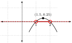
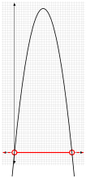
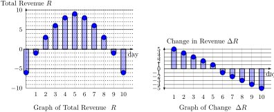
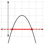

In the previous sections, we have discussed the mathematics of lines, and applications to item price and total cost functions. But linear functions are not powerful enough to model other important concepts, such as revenue and profit. Before we introduce these concepts, we first breifly review quadratic and polynoimal functions.
The concepts in this and the previous chapter are inter-related in complex ways. The following diagram summarizes the relationships between the main concepts in this section and the preceeding section. Refer back to this diagram from time to time to help organize your thoughts.
Section4.1Quadratic and Polynomial Functions
Definition4.1.
A monomial with variable \(x\) is some number times a power of \(x\text{.}\)
A polynomial is a sum of monomials with positive integer powers. The degree of a polynomial is the largest power that occurs.
A quadratic function is a polynomial with maximum degree 2.
Example4.2.Basic polynomial terms.
\(3x^2\) is a monomial of degree 2.
\(0.1 x^4\) is a monomial of degree 4.
\(3x^7 - 2.5 x^1 + 3\) is a polynomial of degree 7.
\(-0.4x^2 + 10.2 x + 15\) is a quadratic function.
Definition4.3.
Let \(f(x)\) be any function. The roots of \(f(x)\) are those inputs \(x\) such \(f(x) = 0\text{.}\) Graphically, the roots of a function are the \(x\)-values where the function intersects the \(x\)-axis, and are also called the function’s \(x\)-intercepts.
Proposition4.4.The Quadratic Formula.
If \(a,b,c\) are real numbers, then
\begin{equation*}
a x^2 + b x + c = 0 \text{ if and only if } x = \dfrac{-b\pm \sqrt{b^2-4ac}}{2a}
\end{equation*}
In particular, if \(f(x) = a x^2 + b x + c\) is any quadratic function, the roots of \(f\) can be found using the quadratic formula.
The shape of the quadratic is determined by the leading coefficient \(a\text{.}\) The curve opens up if \(a\gt 0\text{,}\) and the curve opens down if \(a\lt 0\text{.}\)
Example4.5.Quadratics can open up or down.
Definition4.6.
The vertex of a quadratic is the point in the middle of the curve about which the curve is symmetric. If \(a\gt 0\text{,}\) it is the point on the curve with the smallest\(y\)-value If \(a\lt 0\text{,}\) it is the point on the curve with the largest\(y\)-value.
If the quadratic function has vertex \((h,k)\text{,}\) the biggest or smallest output will be \(y=k\text{.}\) This extreme output will occur when the input is \(x=h\text{.}\)
Figure4.7.Features of a Quadratic Function
Example4.8.Vertices can be maxima or minima.
Most quadratics that we see in this course will pass through the \(x-axis\text{.}\) In this case, there are two ways to find the vertex of a quadratic. One is easier to remember, and one is easier to use.
Notice that quadratic functions have a perfect reflection symmetry through the vertex \((h,k)\text{.}\) That means that the vertex is half way between the two roots, or equivalently the vertice’s \(x\)-value \(h\) is the average of the roots of the function (if they exist).
That means you can find the \(x\)-value of a vertex, denoted \(h\text{,}\) by first finding the roots (using the quadratic equation), and then by averaging them. To find the \(y\)-value of the vertex, plug \(h\) into the equation for the quadratic. In other words, \(k=f(h)\text{.}\)
There is also a shortcut for finding the \(x\)-value of a vertex.
Proposition4.9.
Suppose that \(f(x)=ax^2+ bx + c\) is a quadratic function. Then the vertex is located at the point \((h,k)\) with \(x\)-value \(h=\dfrac{-b}{2a}\) is the average of the \(x\)-intercepts, and \(y\)-value \(k = f(h)\text{,}\) which is equal to \(k=c-\dfrac{b^2}{4a}\text{.}\)
Proof.
We have already noticed that \(h\) is the average of the roots by the symmetry of the quadratic function.
Recall also that the roots of the function \(f(x)=ax^2+ bx + c\) are
To find the \(y\)-value of the vertex, simply plug \(h=\frac{-b}{2a}\) into the original function \(f(x)=ax^2 + bx + c\text{.}\) That gives
\begin{align*}
k \amp = f(h) = f\left(\dfrac{-b}{2a}\right)\\
\amp = a \left(\dfrac{-b}{2a}\right)^2 + b\left(\dfrac{-b}{2a}\right) + c \\
\amp = a \left(\dfrac{b^2}{4a^2}\right) + b\left(\dfrac{-b}{2a}\right) + c\\
\amp = \dfrac{a b^2}{4a^2} + \dfrac{-b^2}{2a} + c\\
\amp = \dfrac{b^2}{4a} + \dfrac{-b^2}{2a} + c\\
\amp = \dfrac{b^2}{4a} + \dfrac{-2b^2}{4a} + c\\
k \amp = \dfrac{-b^2}{4a} + c = c - \dfrac{-b^2}{4a}
\end{align*}
Quadratic Functions.
Have the form \(f(x) = ax^2 + bx + c\)
The curve opens up if \(a>0\text{,}\) and the curve opens down if \(a<0\text{.}\)
You can find the \(x\)-intercepts using the quadratic formula:
\begin{equation*}
f(x) = 0\text{ if and only if }x = \dfrac{-b\pm \sqrt{b^2-4ac}}{2a}
\end{equation*}
The vertex is located at \((h,k)\)\(\phantom{.}\) where \(h=\frac{-b}{2a}\) is the average of the \(x\)-intercepts, and \(k = f(h)\text{.}\)
The max/min output is \(k\text{,}\) and occurs when the input is \(h\text{.}\)
You can visualize any quadratic as a cup that opens up (if \(a \gt 0\)) or opens down (if \(a \lt 0\)).
You can find the \(y\)-intercept by evaluating \(f\) at \(0\text{.}\) In other words, the \(y\)-intercept is \(y=f(0)\)
To solve polynomial inequalities, start with a sketch of the function. The key idea is that any quadratic looks like one of the two examples from Example 4.5. Then, use the formulas above to fill in \(x\)-intercepts and the coordinate of the vertex. Finally, use your sketch to answer the question.
Exploration4.1.
Let \(f(x)=-x^2 + 3x -2 \text{.}\)
(a)
Solve \(f(x) =0\)
Solution.
We must solve the equation \(-x^2 + 3x -2 = 0\text{.}\) We can do this by factoring, or by using the quadratic equation.
Using the quadratic equation \(x = \dfrac{-3 \pm \sqrt{3^2 - 4\cdot (-1) \cdot (-2)}}{2\cdot(-1)}\text{,}\) we get that \(x=1\) or \(x=2\text{.}\)
We will evenutally need to solve equations by factoring, so this is a good time to start practicing. We will rewrite the equation
It is easiest to factor when the leading term is just \(x^2\text{.}\) Here, the leading coefficient is \(-1\text{,}\) so we should divide each term on the left by \(-1\text{.}\)
In other words, we want numbers that add to \(-3\) and multiply to positive \(2\text{.}\) Trying \(d_1=-1\) and \(d_2=-2\text{,}\) we get \(-1+-2=-3\) and \((-1)(-2)=2\) as desired. That means we can rewrite our original equation as
But the product of two numbers can only equal zero if the individual numbers are zero. That means that the equation is equivalent to either having \(x-1=0\)or having \(x-2=0\text{.}\)
In other words, this is equivalent to having \(x=1\) or \(x=2\text{,}\) which are the two \(x\)-intercepts of our quadratic.
(b)
Find the vertex of \(f(x)\text{.}\)
Solution.
Remember that there are two ways to find the \(x\)-value of the vertex.
Because the vertex is the average of the roots, and because we have already found that the roots are \(x=1\) and \(x=2\text{,}\) the vertex has \(x\)-value
Recall that the shape of a quadratic depends only on the coefficient \(a\) of \(x^2\text{.}\) Because \(a=-1\lt 0\text{,}\) the graph of the function is a parabola that opens down.
We have also already found the \(x\)-intercepts \(x=1\) and \(x=2\) and the vertex \((1.5,0.25)\text{.}\) Putting this all together we get the following picture:
(d)
Solve the inequality \(f(x)>0\text{.}\)
Solution.
To solve this inequality, we first need the graph from the previous step. Notice that solving the equation \(f(x)\gt 0\) is the same thing as looking for the values of \(x\) which result in a height of greater than \(0\). Let’s look at what this means on the picture:

We can see that the function outputs values strictly greater than \(0\) if and only if \(1\lt x\lt 2\text{,}\) which corresponds to the interval \((1,2)\)
(e)
Find the maximum \(y\)-value that the function achieves. At what \(x-\)value does the function achieve this output?
Solution.
Again, the key is to look at the sketch of the function. Because the coefficient \(a\) of \(x^2\) is negative, the curve opens down, and the largest \(y\) output occurs at the vertex. We have already shown that the vertex is \((1.5,0.25)\text{.}\)
That means a maximum output of \(y=0.25\) occurs at the \(x\)-value \(x=1.5\text{.}\)
In the previous example, we have seen a technique that we will use in a variety of contexts during this course.
Solving Inequalities of Continuous Functions.
Suppose that \(f(x)\) is any function.
To solve an inequality such as \(f(x) \gt 0\text{,}\) or \(f(x) \lt 0\text{,}\) follow the following steps:
Solve the inequality \(f(x) = 0\text{.}\)
Draw a number line, and label the \(x\)-values where the solutions occur.
Notice that you have divided the \(x\)-axis into several different intervals. Now, look at each interval separately.
For each interval, use a graph, a calculator, or some other technique to decide whether the inequality is true or false on that interval.
Write your final answer down in interval notation, excluding the endpoints (using parentheses).
To solve an inequality like \(f(x)\geq 0\) or \(f(x)\leq 0\text{,}\) repeat the same steps but include the endpoints (using square brackets).
Section4.2Revenue with Fair Pricing
Definition4.10.
Revenue is the total amount of money you take in from selling a number of items. In this class, we’ll focus on fair pricing - where everything is sold at the same unit price. In this case, we have a simple equation:
In the scenario where we sell 20 items at 2$/item, our total revenue will be \(R(20) = 20\cdot 2 = 40\$\text{.}\)
(c)
But there are infinitely many possible universes \(x\) that we need to compare! When the universe depends on the number of items \(x\) sold, we often call \(x\) the quantity.
Find a formula that you the revenue \(R(x)\) as a function of the number of items \(x\) to be sold.
Solution.
To find revenue, we need to apply Definition 4.10. That means we need to multiply quantity and price.
In this question, we are told to use \(x\) to represent the quantity, or number of items.
We must also find the price as a function of \(x\text{.}\) In fact, we have already done that for exactly these numbers in the solution to Exploration 3.5.
In that example, we used the point-slope form of the line to show that the item price function is \(p = -0.4 x + 10\text{.}\)
But we need to find the Revenue, plugging in the above values into the equation
The revenue equals zero when \(x=0\) or \(x=25\text{.}\)
(b)
For what scenarios (values of \(x\)) is your revenue positive? Give your answer in interval notation.
Solution.
The revenue function is a quadratic with negative leading coefficient, so it is a parabola that opens down, which goes through the \(x\)-axis at the break-even points. This allows us to create a quick sketch of the function.
Using this sketch, we can solve the inequality \(R(x)\gt 0\text{,}\) and see that it is true for \(0\lt x \lt 25\text{.}\) In interval notation, this is written \((0,25)\text{.}\)

(c)
For what scenario (value of \(x\)) is your revenue maximized?
Solution.
Because revenue is a quadratic polynomial with negative leading coefficient, the maximum revenue occurs at the vertex \((h,k)\text{.}\)
Recall also that the x-value of the vertex is located at the average of the two x-interceps. In other words, revenue is maximized at \(x=\dfrac{0+25}{2} = 12.5\) items.
We can now put together everything we have done so far in this class into a single example (exploration). Make sure that you are able to do problems like this on your own, since they are common quiz and exam questions.
Exploration4.4.
Suppose you sell 100 items at 12 $/item and 500 items at 4 $/item. Suppose also that price is linear.
(a)
Find an equation \(p(x)\) for price as a function of \(x\text{.}\) Give the units of each number in your equation for your price function \(p\text{.}\)
Solution.
To find the equation of a linear price function, use the point-slope form of the line
\begin{equation*}
p(x) = m (x-x_1) + p_1
\end{equation*}
Note that we are told that \(x_1=100\) items are sold when the item price is \(p_1=12\text{,}\) and that \(x_2=500\) items are sold when the price is \(p_2=4\text{.}\)
Compare the total revenue you can earn from the scenario (possible universe) where you sell 100 units, with the scenario where you sell 500 units, and with the scenario where you sell 600 units. Which of these three scenarios yields the highest total revenue?
Solution.
We have already seen that \(R(600) = 1200\text{.}\)
Note that you will earn the same amount of revenue from selling \(x=100\) items as you will from selling \(x=600\) items. However, you will earn even more revenue from selling \(x=500\) items.
(e)
Find the number (quantity) of items \(x\) that yields highest total revenue. What item price \(p\) will result in the highest total revenue? s
Solution.
Note that the total revenue function is a quadratic function with negative leading coefficient. That means that the largest revenue will occur at the vertex. To find the vertex, either find and average the roots, or use the formula \(h = \dfrac{-b}{2a}\text{.}\) In this case,
\begin{equation*}
h = \dfrac{-14}{2\cdot(-.02)} = 350
\end{equation*}
The maximum revenue will occur when 350 items are sold.
To find the price at which 350 items are sold, use the item price function.
The maximum revenue achieved will be 2,450 dollars.
Application4.11.What does the Revenue Function Teach Us?
As soon as you decide on how much you want to sell each item for, and print the price tag, you are locked into that price until you decide to print a new price tag. Because the quantity you sell will change depending on the price you choose, it is important to think through the implications of your choice before you make that decision. In practice, this usually means a multi-step process:
Do market research to decide how many units you are likely to sell at different item prices.
Use this information to get a function for price as a function of the scenario \(x\text{.}\) This gives a model of how the price changes depending on which possible scenario you are in.
The revenue for each scenario \(x\) is the product of that \(x\) by the scenario’s item price.
You then compare the different values of Revenue \(R\text{,}\) and select the scenario (possible universe) that works best for you. In this case, the meaning of the change in revenue \(\Delta R\) between different values of \(x\) is a bit complex. Here, \(\Delta R\) represents how much revenue would have changed if you had chosen a different possible universe \(x\text{,}\) by deciding to sell additional units by lowering the fixed unit cost that everyone pays.
In other words, the maximum revenue occurs when increasing the quantity \(x\) stops increasing the total revenue and starts decreasing the total revenue, because \(\Delta R\) stops being positive and starts being negative. This is an important feature, and we’ll come back to this later in the semester.

Application4.12.Graphs of Changes in Time vs Items.
You may have noticed a little bit of a change in how we are thinking about price and revenue versus how we thought about gas prices earlier in the semester. The gas prices \(G\) is a function of time, so the change in gas price \(\Delta G\) simply measures how much the price has changed between two days. But for price and revenue, the different values of \(x\) correspond to different and incompatible scenarios where you imagine selling a different number of units.
To see how these fit together, imagine you are running a sequence of experiments where on day 1, you set the price so you sell 1 unit. Then, on day 2, you set the price so you sell 2 units, and so on. In this experiment \(\Delta R\) measures the change in revenue as you move between different days, which each correspond to a different scenario (possible universe).
Just remember - with revenue your goal isn’t the experiment itself. You want to use this thought experiment to find the single scenerio \(x\) where you have the best revenue.
Section4.3Understanding Profit
The most important concept for the applications we will is the idea of different possible universes, which we often call scenarios.
The goal of planning is to figure out what the best possible world would look like, and how to achieve that possible world.
In a market economy, businesses must make a profit, by ensuring that all of the money they take (their total revenue) in is greater than all of the money they spend (their total cost). In this case, finding the best possible world means finding the scenario where the profit is the greatest.
Definition4.13.
The profit of a particiular possible world is the total revenue of that scenerio minus the total cost of that scenerio. In other words,
Recall that we write \(R(x)\) to denote the total revenue in the scenerio where \(x\) items are sold, and \(C(x)\) to denote the total cost of the scenerio where \(x\) items are sold. Following that notation, we write \(P(x)\) for the total profit of this scenerio, and have the equation
You break even when your Revenue equals your Cost. In other words, you break even at those quanitites \(x\) which make the profit \(P(x)=0\text{.}\)
Application4.14.Approaching Word Problems.
When you read an economics problem, always try to translate it into mathematical language. For example, suppose that you have been asked to find all quantities where you make a profit. You might think through the question as follows:
Remember that we use the variable \(x\) to represent the quanitity of items sold in any scenerio.
Remember that we write \(P(x)\) for the total profit of the scenario.
Think carefully and realize that you make a profit if and only if the total profit is greater than 0.
That means the question is asking you to find an equation for the profit function \(P(x)\text{,}\) and to solve the equation \(P(x)\gt 0\text{,}\) using the techinques from Solving Inequalities of Continuous Functions.
Exploration4.5.
You are developing a new product line. You have already found equations for the total revenue and total cost in a variety of scenarios, based on the total number of items to be sold. Suppose that
Recall that we can often solve quadratic equations by factoring or using the quadratic equation. But this case, the function does not factor nicely, so we must use the quadratic equation.
Using a calculator, we see that you break even when \(x=0.5857\dots\) or \(x=3.4142\dots\)
(c)
Sketch a graph of the profit function
Solution.
You can graph the function using a graphing calculator, or you can use your knowledge of quadratic functions and the \(x\)-intercepts you have found above.
Because the profit function is a quadratic with negative leading coefficient \(a=-1\text{,}\) it is a parabola that opens down. Furthermore, the parabola goes through the \(x\)-axis at \(x=0.5857\dots\) and \(x=3.4142\dots\text{,}\) and the parabola is symmetric around the vertex which is half way between those points. Taken together, we get the following image.
(d)
Find all quantities where you make a profit. Write your answer in interval notation.
Solution.
Solve the inequality \(P(x)\gt 0\) by looking at the break even points, and the graph of the profit function.
From this graph, we see that the profit is positive when \(x\) is between \(x=0.5857\dots\) and \(x=3.4142\dots\text{,}\) which is equivalent to having \(x\) in the interval \((0.5857\dots,3.4142\dots)\)

Application4.15.To Round or Not to Round?
In the previous example, we found that the break even quantities were \(x=0.5857\dots\) or \(x=3.4142\dots\text{.}\) But you cannot sell \(0.587\) units, so what does this answer mean practically?
Unfortunately, this depends a lot on the specific context of your specific application.
In the simple case of $ profit as a result of \(x\) items given above, you will only be able to make a profit by selling \(x=1\) items, \(x=2\) items, or \(x=3\) items, since any integer larger or smaller than these will result in a negative profit.
But the power of mathematics is that the same tools can be used to answer questions in very different contexts. For example, suppose instead that \(x\) was the number of thousands of items sold. In other words, suppose that \(P(5)\) is the profit from selling five thousand items. In that case, you will break even when you sell \(x=0.5857\dots\)thousand items or \(x=3.4142\dots\)thousand items. In that case, you would need to sell between \(586\) items and \(340\) items to make a proift.
Other applications require even greater precision. For example, currency exchange rates are often given to at least four decimal places. But what if you are investing millions of dollars in a foreign currency? Then the fifth, sixth, etc decimal places will suddenly be more important.
In a mathematics class, we will generally try to keep as much precision as possible. In any specific application, you should think carefully and consult generally accepted practices related to rounding.
Exploration4.6.
You are planning to open a business selling ornamental pins. After a few weeks of experimenting with the price, you decide that during the average week, you can sell 100 pins at $11 per pin, and 200 pins at $1 per pin. Suppose also that uppose that it costs $500 to rent the production line, and $3 to make each pin.
Finally, after looking at a graph of some additional data, you decide that demand price is a linear function.
(a)
Find the item price \(p(x)\) as a function of the quantity \(x\) to be sold.
Solution.
To find the equation of a linear function, use the point-slope form of the line
\begin{equation*}
p(x) = m (x-x_1) + p_1
\end{equation*}
Note that we are told that \(x_1=100\) items are sold when the item price is \(p_1=11\text{,}\) and that \(x_2=200\) items are sold when the price is \(p_2=1\text{.}\)
We write \(x\) for the number of items, and we have already found that the item price is \(p(x) = -0.1x + 21 \) in the scenerio where \(x\) items are sold. That means we just multiply \(x\) by \(p(x)\) to get revenue.
To find the total cost, recall our approach from Exploration 3.8. If you are going to sell \(x\) items, you must pay a fixed cost of \(500\) dollars, as well as \(3\)$ for each item \(x\text{.}\) That gives us a total cost function
\begin{equation*}
C(x) = 500 + 3x
\end{equation*}
We can now combine the total revenue and total cost functions to get the profit function.
You can solve this equation using the quadratic equation or by factoring. This function does not have a nice factorization, so we use the quadratic equation
What is the number of units \(x\) needed to maximize profit? What is the maximum profit?
Solution.
Because profit is a quadratic that opens down, the maximum profit occurs at the vertex \((h,k)\text{,}\) which is located half way between the two roots.
That means we can find \(h\) by averaging \(x=34.32\dots\) and \(x=145.68\)
The maximum profit you can achieve in any possible world (number of quanitites sold) is $\(310\text{.}\) That total profit is achieved in the scenario where you set the price so that \(x=90\) items are sold.
(f)
What is the number of units \(x\) needed to maximize profit? What is the maximum profit?
Section4.4Rational Functions
Definition4.16.
A function \(f(x)\) is a rational function if \(f(x)\) can be written as a fraction of polynomials. In other words, a rational function \(f(x)\) can be written as a fraction
where the numerator and denominator \(p(x)\) and \(q(x)\) are both polynomials.
Because division by 0 is undefined, there are often values of \(x\) which make a function undefined. For such an input \(x\text{,}\) we say that \(f(x)\ DNE\text{.}\)
Every polynomial is a rational function (with denominator \(q(x)=1\)), but not every rational function is a polynomial.
Solving Inequalities of Rational Functions.
Suppose that \(f(x)\) is a rational function. In other words, suppose that \(f(x) = \dfrac{p(x)}{q(x)}\) where the numerator and denominator \(p(x)\) and \(q(x)\) are both polynomials.
To solve an inequality such as \(f(x) \gt 0\text{,}\)\(f(x) \lt 0\text{,}\)\(f(x)\geq 0\text{,}\) or \(f(x)\leq 0\) follow the following steps:
Solve the inequality \(f(x) = 0\text{,}\) by finding all inputs that make the numerator\(p(x)\) equal to \(0\text{.}\)
Draw a number line, and label the \(x\)-values where the solutions occur. Use an open circle if the inequality is \(\gt\) or \(\lt\text{,}\) or a closed circle if the inequality is \(\geq\) or \(\leq\text{.}\)
Find any inputs \(x\) where the function is undefined (such that \(f(x)\ DNE\)). In other words, find all values of \(x\) which make the denominator\(q(x)\) equal \(0\text{.}\)
Label the \(x\)-values where the function \(DNE\) on your number line using open circles.
For each interval, use a graph, a calculator, or some other technique to decide whether the inequality is true or false on that interval.
Write your final answer down in interval notation. include all endpoints with closed circles (use square brackets), and exclude all endpoints with open circles (use parentheses).